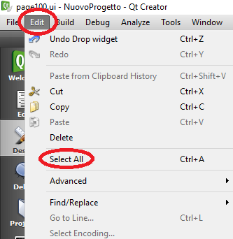

Es ist absolut verboten, eine bestehende Seite umzubenennen, um Fehlfunktionen im Projekt zu vermeiden. Wenn Sie es trotzdem tun wollen, gehen Sie wie folgt vor:
Erstellen Sie eine neue Seite mit dem gewünschten Namen;
Auf der Seite, die Sie umbenennen möchten: Alle Elemente auswählen. Edit → Select All

Elemente kopieren: Edit → Copy
Gehen Sie auf die neu erstellte Seite und wählen Sie Edit → Paste
Entfernen Sie die Seite, die Sie entfernen möchten, wie im Kapitel “Eine Seite entfernen” beschrieben.